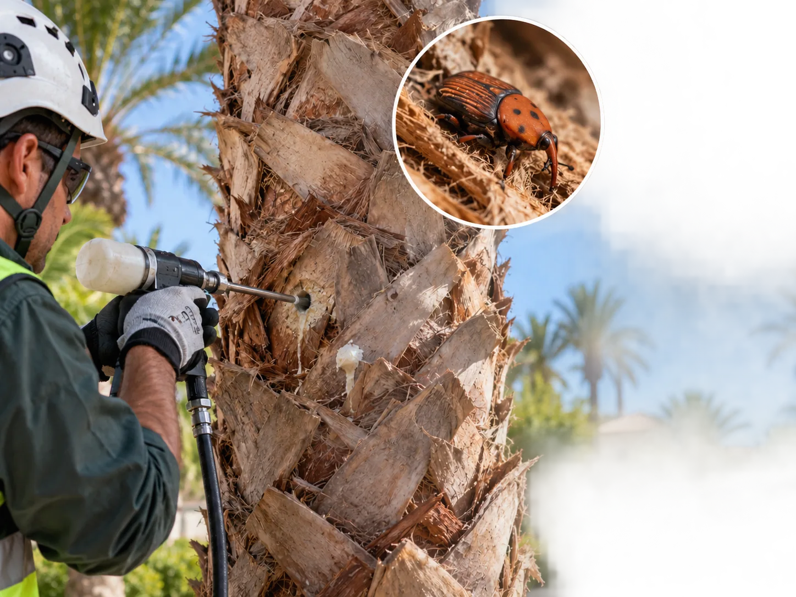

Qué es el picudo rojo
El picudo rojo (Rhynchophorus ferrugineus) es un escarabajo que pone sus huevos dentro del tronco de la palmera. Las larvas se alimentan del interior del estípite hasta debilitarlo por completo, y cuando nacen como escarabajos adultos vuelan a otras palmeras cercanas. Es la plaga que más ha cambiado el trabajo del palmerero en los últimos años en la Región de Murcia, donde ha afectado especialmente a la palmera canaria.
Síntomas para reconocerla a tiempo
- Las hojas centrales (el cogollo) empiezan a caer o a inclinarse de forma anormal, en vez de mantenerse erguidas.
- Aparecen agujeros o serrín en la base de las hojas y en el estípite.
- Se nota un olor fermentado saliendo del tronco, señal de que las larvas ya están dentro.
- La copa pierde volumen y las hojas más nuevas salen más cortas o deformadas.
Cuanto antes se detecte, más posibilidades hay de salvar la palmera — por eso conviene revisar el cogollo de cerca ante cualquier cambio en el aspecto de la copa.

Cómo se trata
El tratamiento depende de qué tan avanzada está la infestación. En fase temprana, se aplica tratamiento fitosanitario preventivo o curativo, a veces inyectado directamente en el tronco. En casos más graves, hace falta cirugía para retirar la parte afectada del estípite y limpiar la zona antes de aplicar el tratamiento. La mejor época para los tratamientos preventivos es entre primavera y verano, cuando el insecto se mueve más, y también tras la poda, ya que la palmera recién podada emite feromonas que atraen a los escarabajos.
No existe todavía un sistema 100% efectivo para erradicar la plaga por completo, así que el tratamiento preventivo periódico es la mejor defensa para palmeras sanas en zonas donde ya hay casos confirmados.